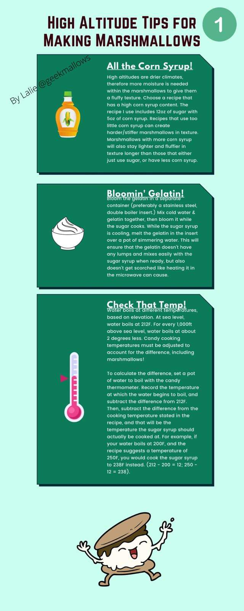
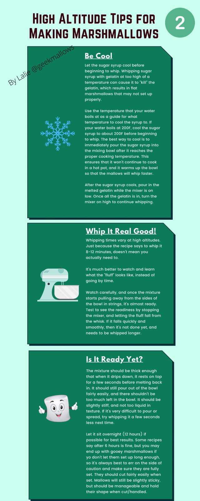
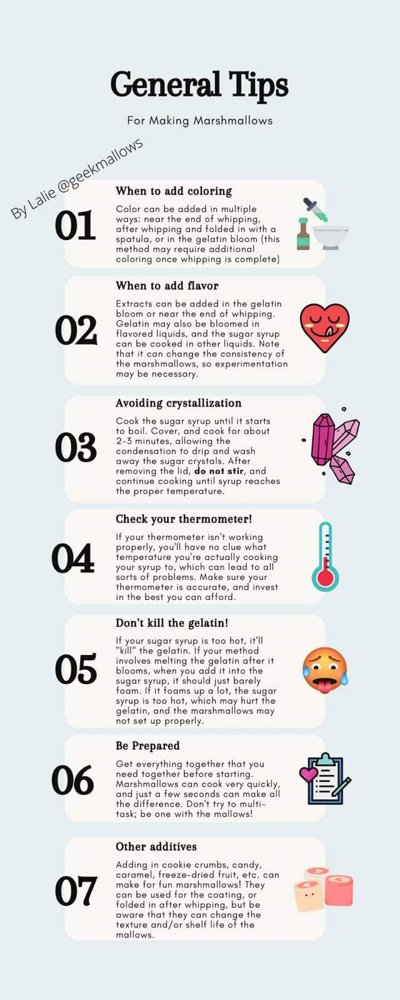

Yield: approx. 9 dozen marshmallows, or 1½ lbs miniature | Prep: 35 mins | Inactive: 4 hrs | Cook: 10 mins | Total: 4 hrs 45 mins
Ingredients
3 packages unflavored gelatin
1 cup ice cold water, divided
12 ounces granulated sugar (approx. 1½ cups)
1 cup light corn syrup
¼ teaspoon kosher salt
1 teaspoon vanilla extract
¼ cup confectioners' sugar
¼ cup cornstarch
Nonstick spray
Instructions
Place the gelatin into the bowl of a stand mixer along with ½ cup of the water. Have the whisk attachment standing by.
In a small saucepan combine the remaining ½ cup water, granulated sugar, corn syrup, and salt. Place over medium-high heat, cover, and allow to cook for 3 to 4 minutes. Uncover, clip a candy thermometer onto the side of the pan, and continue to cook until the mixture reaches 240°F, approximately 7 to 8 minutes. Once the mixture reaches this temperature, immediately remove from the heat.
Turn the mixer on low speed and, while running, slowly pour the sugar syrup down the side of the bowl into the gelatin mixture. Once you have added all of the syrup, increase the speed to high. Continue to whip until the mixture becomes very thick and is lukewarm, approximately 12 to 15 minutes. Add the vanilla during the last minute of whipping.
For regular marshmallows: Combine the confectioners' sugar and cornstarch in a small bowl. Lightly spray a 13x9-inch metal baking pan with nonstick cooking spray. Add the sugar/cornstarch mixture and move around to completely coat the bottom and sides of the pan; return the remaining mixture to the bowl for later use. Pour the marshmallow mixture into the prepared pan using a lightly oiled spatula and spread evenly. Dust the top with enough of the remaining sugar/cornstarch mixture to lightly cover; reserve the rest. Allow to sit uncovered for at least 4 hours, up to overnight.
Turn the marshmallows out onto a cutting board and cut into 1-inch squares using a pizza wheel dusted with the confectioners' sugar mixture. Once cut, lightly dust all sides of each marshmallow with the remaining mixture, using additional if necessary. Store in an airtight container for up to 3 weeks.
For miniature marshmallows: Combine the confectioners' sugar and cornstarch in a small bowl. Line 4 half sheet pans with parchment paper, spray with nonstick cooking spray, and dust with the confectioners' sugar mixture. Scoop the mixture into a piping bag fitted with a ½-inch round piping tip and pipe lengthwise onto the prepared sheet pans, leaving about 1 inch between each strip. Sprinkle the tops with enough of the remaining mixture to lightly cover. Let the strips set for 4 hours or up to overnight.
Cut into ½-inch pieces using a pizza wheel or scissors dusted with the confectioners' sugar mixture. Once cut, lightly dust all sides of each marshmallow with the remaining sugar mixture and store in an airtight container for up to a week.
"Alton Brown 2.0" Homemade Marshmallows (altonbrown.com)
1 cup cold water, divided, plus a little extra if needed
1½ cups plus 1½ tablespoons granulated sugar
½ cup light corn syrup
¼ teaspoon kosher salt
1 teaspoon vanilla extract
Instructions
Sift together the cornstarch and confectioners' sugar into a medium bowl.
Lay out a clean kitchen towel on the counter. Place a 9x13-inch metal baking pan on the towel, then spray generously with nonstick oil spray. Thoroughly dust with one-third of the cornstarch-sugar mixture over the bottom and sides of the pan, then shake and tap the pan so the mixture coats evenly. Return any remaining mixture to the bowl. Stash the baking pan within arm's reach.
In the bowl of a stand mixer fitted with the whisk attachment, pour in ½ cup of the water, then sprinkle the gelatin into an even layer over the surface. Let sit for 5 minutes to bloom; if you still see dry gelatin, drizzle on just enough extra water to barely cover and let sit another minute or two to hydrate.
Meanwhile, combine the remaining ½ cup water, the granulated sugar, corn syrup, and salt in a 2-quart saucepan. Place over medium-high heat, cover, and cook until the mixture begins to simmer around the edges, about 3 minutes. Uncover and continue to cook, without stirring, until the mixture reaches 240°F, approximately 8 more minutes. If sugar crystals form on the sides of the pot, use a wet pastry brush to wipe down and dissolve them. Remove from heat immediately at 240°F.
Turn the mixer to low speed and, while running, slowly pour the sugar syrup down the side of the bowl into the gelatin mixture — do not pour it directly on the whisk. Once all the syrup is added, gradually increase the speed to high. Continue to whip until the mixture becomes very thick and the bowl feels just lukewarm, 13 to 14 minutes. Add the vanilla and whisk for another 30 seconds to incorporate. Reduce speed to stir and gradually lift the mixer head to dislodge most of the marshmallow from the whisk, then turn the mixer off.
Pour the mixture into the prepared pan, using a lightly oiled spatula to spread it evenly — work quickly, as it sets up fast. Dust the top with enough of the remaining sugar/cornstarch mixture to lightly cover; reserve the rest. Allow to sit uncovered for at least 3 hours, but overnight is better.
Use a small offset spatula to loosen the marshmallow from the sides of the pan. Turn out onto a cutting board, dust with a little more of the sugar-cornstarch mixture, and cut into 24 squares using a pizza cutter or oiled sharp knife. (Cut into ½-inch squares for mini marshmallows for hot cocoa.) Once cut, lightly dust all sides of each marshmallow with the additional mixture. Consume right away or store in an airtight container for weeks, if not months.
Homemade Marshmallows by Brown Eyed Baker
Servings: 118 marshmallows | Prep: 30 mins | Cook: 10 mins | Resting time: 11 hrs 20 mins | Total: 12 hours
Line a 9x13-inch pan with foil, enough so excess foil hangs over the sides. Spray with non-stick cooking spray; set aside.
In a small bowl, whisk together the powdered sugar and cornstarch; set aside.
Pour ½ cup of the cold water into the bowl of an electric mixer fitted with the whisk attachment.
Sprinkle the gelatin over the water. Let stand until the gelatin becomes very firm, about 15 minutes.
Meanwhile, combine the remaining water and corn syrup in a medium saucepan. Pour the sugar into the center of the saucepan and add the salt. Place over medium-high heat and bring to a boil, gently swirling the pan, until the sugar has dissolved completely and the mixture reaches 240°F, about 6 to 8 minutes.
Turn the mixer on low speed and carefully pour the hot syrup mixture into the gelatin mixture, avoiding the side of the bowl as much as possible. Gradually increase the speed to high and whip until the mixture is very thick and stiff, 10 to 12 minutes, scraping down the bowl as needed.
Add the vanilla extract and mix until incorporated, about 15 seconds.
Working quickly, scrape the mixture into the prepared pan using a spatula sprayed with non-stick cooking spray. Smooth the top into an even layer.
Sift 2 tablespoons of the powdered sugar mixture over the pan. Cover and let sit overnight at room temperature.
The next day, turn the marshmallow slab out onto a cutting board and peel off the foil. Sift 2 tablespoons of the powdered sugar mixture over the slab. Using a pizza cutter or sharp knife sprayed with non-stick cooking spray, cut into 1-inch strips one way, then the other way for squares. Round cutters also work.
Place the remaining powdered sugar mixture in a large Ziploc bag. Working with 3 or 4 marshmallows at a time, toss in the bag with the powdered sugar mixture, then toss in a fine-mesh strainer to remove excess powder.
Marshmallows can be stored at room temperature in an airtight container or bag for up to 2 weeks.
Recipe Notes
Nutritional values are based on one marshmallow: 23 kcal, 6mg sodium, 5g carbohydrates, 5g sugar.
Yields: 6 cups | Prep Time: 5 mins | Total Time: 6 hrs 45 mins
Ingredients
1 cup water, divided
3 (7g) packets gelatin (7 tsp.)
½ teaspoon kosher salt
¾ cup powdered sugar
¼ cup cornstarch
Cooking spray
1¾ cups granulated sugar
⅔ cup light corn syrup
1½ teaspoons pure vanilla extract
Instructions
In the bowl of a stand mixer fitted with the whisk attachment, combine ½ cup water with gelatin and mix briefly to combine. Sprinkle in salt and allow gelatin to bloom fully, about 10 minutes.
In a medium bowl, sift together powdered sugar and cornstarch until well combined. Lightly grease an 8" square pan with cooking spray and dust all over evenly with the cornstarch-sugar mixture. Grease a silicone spatula and offset spatula with cooking spray and set aside.
Meanwhile, to a medium pot over medium heat, add the remaining ½ cup water. Gently pour in granulated sugar, taking care not to splash any up the sides of the pan. Add corn syrup and cook without stirring until bubbles become glass-like and the mixture thickens and reaches 240°–245°F, about 15 minutes. Remove from heat.
With the stand mixer on medium speed, slowly and carefully pour the hot syrup mixture into the bowl with gelatin. Once all the syrup is in, increase mixer speed to medium-high and continue to beat until the bowl is cool enough to touch and the mixture is fluffy, white, and about tripled in size, about 10 to 12 minutes. Add vanilla and beat until fully combined, 1 minute more.
Using your greased spatulas, quickly transfer the marshmallow mixture into the prepared pan and smooth the top into an even layer. Let set, uncovered or half-covered, at room temperature for at least 6 hours, up to overnight.
Turn out the set marshmallows onto a surface dusted with more cornstarch-sugar mixture. Grease a chef's knife with cooking spray and dust with the mixture. Cut into desired size, turning to coat each marshmallow generously to prevent sticking.
Store in an airtight container at room temperature until ready for use.
.75 oz unflavored gelatin (3 envelopes Knox gelatin)
½ cup cold water
2 cups granulated sugar
⅔ cups light corn syrup
¼ cup water
¼ teaspoon salt
1 tablespoon pure vanilla extract (or other flavor extracts)
Confectioners' sugar
Instructions
Line a 9x9-inch or 8x8-inch pan with plastic wrap and lightly oil it using your fingers or non-stick cooking spray. Set aside.
In the bowl of an electric mixer, sprinkle gelatin over ½ cup cold water. Soak for about 10 minutes.
Meanwhile, combine sugar, corn syrup, and ¼ cup water in a small saucepan, whisking only until the sugar is dissolved. Bring to a rapid boil. As soon as it is boiling, set a timer and allow to boil hard for 1 minute without stirring.
Carefully pour the boiling syrup into the soaked gelatin and turn on the mixer with the whisk attachment, starting on low and moving up to high speed. Add the salt and beat for 10 to 12 minutes, or until fluffy and mostly cooled to almost room temperature. Add the extract and beat to incorporate.
Grease your hands and a rubber or silicone scraper with neutral oil and transfer the marshmallow into the prepared pan. Use your greased hands to press the marshmallow into the pan evenly. Press a piece of lightly oiled plastic wrap on top to create a seal. Let sit for a few hours, or overnight, until cooled and firmly set.
Sprinkle a cutting surface very generously with confectioner's sugar. Remove the marshmallow from the pan and lay on top of the sugar. Dust the top generously with sugar as well. Use a large, sharp knife to cut into squares. Separate pieces and toss to coat all surfaces with the sugar.
4 envelopes unflavored gelatin (3 tablespoons plus 1½ teaspoons)
3 cups granulated sugar
1¼ cups light corn syrup
¼ teaspoon salt
2 teaspoons pure vanilla extract
1½ cups confectioners' sugar
¾ cup cold water (for gelatin)
¾ cup water (for syrup)
Instructions
Brush a 9x13-inch glass baking dish with oil. Line with parchment, allowing a 2-inch overhang on the long sides. Brush parchment with oil; set aside.
Put granulated sugar, corn syrup, salt, and ¾ cup water into a medium saucepan. Bring to a boil over high heat, stirring to dissolve sugar. Cook, without stirring, until the mixture registers 238°F on a candy thermometer, about 9 minutes.
Meanwhile, put ¾ cup cold water into the bowl of an electric mixer; sprinkle with gelatin. Let soften 5 minutes.
Attach the bowl with gelatin to the mixer fitted with the whisk attachment. With the mixer on low speed, beat the hot syrup into the gelatin mixture. Gradually raise speed to high; beat until the mixture is very stiff, about 12 minutes. Beat in vanilla. Pour into the prepared dish and smooth with an offset spatula. Set aside, uncovered, until firm, about 3 hours.
Sift 1 cup confectioners' sugar onto a work surface. Unmold the marshmallow onto the sugar; remove parchment. Lightly brush a sharp knife with oil, then cut the marshmallow into 2-inch squares. Sift the remaining ½ cup confectioners' sugar into a small bowl and roll each marshmallow in the sugar to coat.
Prep Time: 10 mins | Cook Time: 10 mins | Cooling: 2 hrs | Serves: 16 marshmallows
Ingredients
21 grams unflavored gelatin (3 packs / Knox gelatin powder — agar agar can be substituted for a vegan version, but the texture won't be the same)
4 oz (113g / ½ cup) cold water, for the gelatin
6 oz (170g / ¾ cup) corn syrup, or honey, golden syrup, or maple syrup
2 oz (56g / ¼ cup) honey, or corn syrup
12 oz (340g / 2 cups) granulated sugar
4 oz (113g / ½ cup) water, for the sugar syrup
¼ teaspoon salt
1 whole vanilla bean, or 2 teaspoons vanilla extract
4 oz (113g / ½ cup) canola oil, for brushing utensils
4 oz (113g / ¼ cup) powdered sugar, for dusting
Instructions
You have to move quickly with marshmallows, as they set up very fast. Pre-measure all your ingredients and scrape your vanilla bean. Have your candy thermometer, mixer, and tools ready to go.
Cut a piece of parchment paper to 9"x13" and a second piece to 9"x20" (the longer piece folds on top of the marshmallows later). Line the pan with both pieces going in opposite directions, then oil the parchment paper as well — if you don't oil the pan and parchment, the marshmallows will stick.
Add the gelatin and cold water to the bowl of your stand mixer and let it absorb for 15 minutes while you make the sugar syrup.
Add the corn syrup, honey, sugar, and water to a medium sauce pan. Stir together to combine, then turn the heat to medium-high. Don't mix it again — cover with a lid and let condensation gather for 5 minutes to wash down the sides of the pot and dissolve any rogue sugar grains.
Remove the lid, reduce heat to medium, and carefully attach your candy thermometer. Continue heating but do not stir! Heat until it reaches 240°F (115°C). Don't be alarmed if it stays at 225°F for a while — that's the water evaporating. Once steam stops rising, the temperature will rise quickly.
Once it reaches 240°F, carefully remove the pan from the heat and take off the candy thermometer.
Turn your mixer on medium and slowly drizzle the sugar syrup into the mixer, aiming the stream between the whisk and the side of the bowl (pouring onto the whisk will create hard sugar bits). Add in the vanilla and salt.
Turn the mixer up to high and whip for 8–10 minutes. When the mixer bowl is slightly warm to the touch — not hot or cold — it's done. Move very quickly, as the marshmallows will start to set up almost immediately.
Grease a spatula (and your hand) with canola oil and pour the marshmallow fluff into your prepared pan — a second person to hold the bowl helps. Oil your hands or spatula again and spread the fluff to the edges of the pan. It will be very sticky. Cover with the long end of the oiled parchment and smooth to the edges with your hands.
Let sit at room temperature for a minimum of 2 hours, preferably overnight. The longer they rest, the easier they will be to cut.
Once set, lift the sides of the parchment to remove the marshmallows from the pan. Peel off the top layer of parchment and dust the top with powdered sugar. Dust your surface with powdered sugar too, remove the bottom parchment, and place the slab on the prepared surface. You really can't have too much powdered sugar — it helps prevent sticking.
Coat your bench scraper, knife, or scissors with canola oil to help prevent sticking (a 10" bench scraper works best). Cut into 2" squares (or whatever size you prefer).
Coat each marshmallow in more powdered sugar and store at room temperature in an airtight container. They can last for months!
Notes & Tips
Toasting them for s'mores or dipping in chocolate for hot cocoa is highly recommended.
Leave cut marshmallows at room temperature for 24–48 hours to dry out a bit. Store in an air-tight bag or freeze.
Measure all of your ingredients by weight instead of converting to cups — a kitchen scale is easy to use, just place a bowl on top, tare, and pour in the ingredient.
You MUST use a thermometer when making marshmallows.
Do not stir your sugar syrup while it's heating up — that could lead to crystallization.
Super Easy Egg-Free Marshmallows ("Sweetest Kitchen")
Grease a 9-inch (22cm) square baking pan with butter and set aside.
In the bowl of a stand mixer fitted with a whisk attachment, pour in ½ cup of the water and sprinkle with the gelatin. Set aside to allow the gelatin to soak in.
In a medium saucepan over high heat, add the sugar, corn syrup/glucose syrup, salt, and remaining ½ cup of water. Bring to a rolling boil and continue to boil for 1 minute. Remove from the heat.
Turn the mixer on low and mix the gelatin once or twice to combine it with the water. Slowly add the hot sugar mixture, pouring it gently down the side of the bowl, and continue to mix on low. Be careful — the sugar mixture is smoking hot!
When all the hot sugar mixture has been added, turn the mixer to high and continue to whisk for 10 to 12 minutes until the marshmallow batter almost triples in size and becomes very thick. Scrape down the sides of the bowl frequently to avoid overflow. Stop the mixer, add the vanilla, then whisk briefly to combine.
Transfer the mixture to the prepared baking pan and use a spatula or bench scraper to spread it evenly. Work quickly, as the marshmallow becomes more difficult to manipulate as it sets.
Grease a sheet of plastic wrap with butter and lay it across the top of the marshmallow, pressing down firmly to seal it smoothly and tightly against the mixture.
Leave the marshmallow to set at room temperature for at least 3 hours or, even better, overnight. It will be too sticky and soft to cut if you try too soon.
Sprinkle a work surface or cutting board with icing sugar. Run a knife along the top edge of the pan to loosen the marshmallow slab. Invert the pan and flip the marshmallow out onto the counter or board. Scoop up handfuls of icing sugar and rub all over the marshmallow.
Use a large, sharp knife to cut the slab into 1x1-inch squares (wash the knife off a few times to keep getting clean cuts). Roll each freshly cut marshmallow square in the remaining icing sugar to coat completely.
Flavor Variations
Coffee Marshmallows: Add ½ cup of strongly brewed coffee or espresso instead of the water in Step 2, and another ½ cup of coffee/espresso instead of the water in Step 3.
Raspberry Marshmallows: In a small saucepan over medium heat, warm ¼ cup raspberry jam until runny, about 3 minutes. Remove from heat, pour through a fine sieve over a small bowl to catch any seeds and create a purée. Add the purée and one drop of red food coloring at the end of the 10–12 minute whisking step. Note: with liquid food coloring you may need much more than one drop to turn the marshmallows pink, and the jam alone may not give a strong raspberry flavor — raspberry flavoring may work better.
Jondell's Marshmallow Recipe & Flavor Combos
Base recipe adapted from an almond-coconut marshmallow recipe (egg whites omitted)
Ingredients
3 envelopes unflavored gelatin (about 21g, or 2–2.5 Tbsp)
Oil the bottom and sides of a 9x13 rectangular baking pan to ensure marshmallows won't stick. A spray oil works best.
In the bowl of a standing electric mixer (or a large bowl), sprinkle gelatin over ½ cup cold water mixed with your extract of choice, if using, and let stand to soften.
In a heavy saucepan, cook the granulated sugar, corn syrup, second ½ cup of cold water, and salt over low heat, stirring with a wooden spoon, until the sugar is dissolved. Increase heat to moderate and boil without stirring until a candy or digital thermometer registers 240°F, about 12 minutes.
Remove the pan from heat and pour the sugar syrup over the gelatin bloom, stirring until the gelatin is dissolved.
With a standing or hand-held electric mixer, beat the mixture on high speed until white, thick, and nearly tripled in volume — about 6–8 minutes with a standing mixer, or about 10 minutes with a handheld mixer. It's ready when strings start pulling away from the sides.
Pour the mixture into the prepared baking pan and smooth with an oiled baking spatula. Add any toppings or sprinkles now if desired.
Let the marshmallows set up, uncovered, until firm — at least 4 hours and up to 1 day.
To cut: sprinkle a 50/50 mix of powdered sugar and cornstarch on a large cutting board (for chocolate, use powdered sugar, cornstarch, and Dutch process cocoa). Run a thin knife around the edges of the pan and invert onto the cutting board. Lifting one corner of the inverted pan, ease the marshmallow onto the board. Sprinkle the powdered sugar/cornstarch mix on top (add cocoa for chocolate). With a large knife, trim edges if needed and cut into roughly 1-inch cubes (8 rows, each cut into 5 cubes, yields about 40 marshmallows from a 9x13 pan).
Roll the marshmallows through a 50/50 mix of powdered sugar and cornstarch on all six sides if plain, shaking off the excess before packing away.
If dipping in chocolate, don't roll in powdered sugar/cornstarch after cutting — chocolate won't stick as well to the coated surface. Instead, dip the sticky side into melted chocolate, then dip or roll in toppings, then dust the remaining sides. A squeeze bottle of melted chocolate also works for drizzling on top.
Flavor Combos (15 variations)
Almond marshmallows dipped in dark chocolate with toasted coconut — use ¾–1 Tbsp almond extract instead of vanilla. Toast sweetened coconut flakes in a pan. Once marshmallows are cut, dip in chocolate and top with the coconut flakes.
Peppermint marshmallow — use ½ tsp peppermint extract. Once cut, dip in semi-sweet chocolate and top with crushed candy canes (perfect for the holidays).
S'mores — make a regular vanilla marshmallow, then once cut, dip in dark chocolate and top with crushed graham crackers.
Cookies n' cream — use vanilla extract in your bloom. Fold in crushed gluten-free Oreo-style cookies (1 10-oz package) into the fluff after fully whipped — they're crunchier and don't get too soft, though regular Oreos work too.
Watergate salad — mix together a package of pistachio pudding mix and a well-drained can of crushed pineapple. Add to the marshmallow fluff and mix well before pouring into the prepared pan. Top with pecan pieces.
Candied sweet potato marshmallows — mix 2 tsp vanilla extract with the water and gelatin. While the marshmallows are fluffing up, mix together ½ cup sweet potato purée, 1 tsp cinnamon, ½ tsp ginger, ½ tsp nutmeg, and ¼ tsp allspice (adjust allspice/nutmeg to taste). Slowly add the sweet potato mixture once fluffed, then pour into a prepared pan. Top with pecan pieces.
Strawberry with chocolate drizzle — 2 tsp strawberry extract (add 1 tsp vanilla too if using store-brand extract). Add red/pink food coloring to the fluff and mix to incorporate. After cutting, drizzle with semisweet chocolate; add sprinkles if desired. Freeze-dried strawberries give a more natural flavor.
Honey and brown sugar — replace white sugar with brown sugar and corn syrup with honey. Top with cinnamon sugar.
Vanilla cinnamon — use 2 tsp vanilla and 1 tsp ground cinnamon in the gelatin bloom. Delicious drizzled with white chocolate!
Coffee — use double-strength coffee instead of water with the gelatin.
Birthday cake — use ¾ Tbsp vanilla extract, ¼ Tbsp almond extract, and ¾ tsp butter extract. Top with sprinkles or food coloring swirls immediately after pouring the fluff into the pan.
Brownie batter — use ¾ Tbsp vanilla extract, ¼ Tbsp almond extract, and ¾ tsp butter extract in the bloom. Once fully fluffed, add ½ cup Guittard Dutch process cocoa rouge (other cocoas may cause deflation — fold in if not using Guittard). Top with sprinkles when pouring; when dusting, use a mix of cocoa powder, powdered sugar, and cornstarch.
Almond wedding cake — 2 tsp almond extract, 1 tsp vanilla extract, and 1 tsp butter extract in the bloom. Top with white nonpareils or candy pearls.
Coconut — use 1 Tbsp coconut extract in the bloom. Roll in unsweetened or toasted sweetened coconut flakes. Also great topped with chocolate.
Golden syrup — use golden syrup in place of corn syrup (1:1). Dip in chocolate and top with homemade honeycomb candy made from golden syrup.
General notes: Store-bought extracts are typically used; oil-based flavorings can make the texture slightly denser but are still delicious. If using a different brand (e.g. LorAnn oils), adjust measurements — about ¼ tsp of LorAnn oil is usually enough, and extra-strength flavorings need much less. Instead of dipping in chocolate, sprinkling chocolate chips on top is an easy alternative.
450g granulated sugar (can part-substitute 250g with Sugar and Crumbs Flavoured Icing Sugar)
150g glucose syrup
60ml water
Bloom
36g gelatine (or 3x 12g sachets Dr. Oetker gelatine)
180ml cold water
0.5–1 Tbsp extract of choice (or 10–20 drops concentrated flavour extracts, or 1 sachet of Kool-Aid)
Other
Optional: colouring & toppings
Dusting mix — 50/50 cornflour and icing sugar
Tools
Stand mixer with whisk attachment
9x13 baking tin (or whatever size desired) — fills to approx. 1" high
x2 spatula
Candy thermometer
Saucepan, scales, mini whisk (or fork)
Vegetable oil, baking paper, large bowl, tray
Sieve (or brush), airtight container or bags
Instructions
In the bowl of your stand mixer, add the 180ml cold water and the gelatine and stir lightly to combine. Place to one side.
Spray or brush your pan lightly with vegetable oil (e.g. PME release-a-cake), and spray your spatula too. Place to one side until needed.
In your saucepan, add the sugar, glucose syrup, and 60ml water. Place over low heat, stirring with a spatula until the sugar granules have melted — don't forget to scrape down the sides.
Once melted, stop stirring and turn up to medium heat, placing a sugar thermometer into the pan. Do not stir or swirl the pan from this point, as it could crystallise the syrup.
Once the gelatine has bloomed (absorbed the water), add any flavourings and turn on the mixer to break up the gelatine while the sugar syrup boils.
The sugar syrup should reach a rolling boil (about 5–6 minutes on medium); once it reaches 240°F/115°C, turn off the heat and remove the thermometer.
Set the mixer to its lowest setting and slowly and carefully pour in the sugar syrup, aiming for the gap between whisk and side of the bowl.
Leave the mixer on low/medium for a couple of minutes so the hot syrup can melt the gelatine (and any syrup that splashed on the side of the bowl). Once it looks soupy with no lumps, turn up the speed.
After 7–8 minutes of whisking, the marshmallow should have tripled in size and started to "string" away from the sides of the bowl. (Personal preference: 2 mins low, 3 mins medium, 2–3 mins high.)
If a single colour is required, add it in the last minute of whisking. For a marbling effect, use a spatula to fold colour through the mix, scraping around the sides.
Pour the mix into the prepared tin, using a spatula to smooth out evenly. Optional: lightly oil a piece of baking paper (or clingfilm) and press down over the tray to level the mix and push the marshmallow into the corners and edges — this also stops it drying out or going crusty.
Leave to set for 3–6 hours (or overnight).
Once set, remove the paper and dust the top with the cornflour/icing sugar dusting mix. Remove the marshmallow from the tin and dust all sides. Using a sharp knife (sprayed with oil and coated with dusting mix), cut into the desired size.
Dunk all cut pieces in the dusting mix and use a sieve to shake off the excess. Leave on a tray to dry, then store in an airtight container or heat-sealed bags for up to 4 weeks.
Variations
Chocolate: Add cocoa powder to your syrup — be careful, you'll need a deep pan as this makes the syrup bubble up high.
Oreo/Biscoff (or similar): Roughly crush the desired amount of biscuits and mix into a vanilla marshmallow before pouring into the tin.
Caramel: Using a piping bag and thick caramel, pipe lines across the top of the marshmallow once in the tray, and use a knife or skewer to swirl/feather it through.
Nutella: Swirl melted Nutella through the marshmallow.
Toppings (chocolate chips, sprinkles, mini eggs, etc.): add to the top as soon as you pour into the tray to ensure they stick. It also helps to cut the slab from the bottom instead of the top so toppings stay in place and even.
Layers or multiple flavours: To make 2 layers from the same batch, split the mixed batch in 2, quickly colour both halves, and pour into the tin, smoothing out. Reduce mixing time slightly so it's still pourable. The easier method is to make 2 batches one after the other and pour the second batch straight on top of the first (don't dust the top of the first batch or cover it with oiled paper).
Vanilla Gourmet Marshmallows by Chefy Bakehouse Chiang Mai
Ingredients
Bloom
60g cold water
19g powdered gelatine
Syrup
70g water
214g white sugar
85g corn syrup or glucose
Stand Mixer (to combine with melted gelatine)
55g water
85g corn syrup or glucose
Flavorings
Pinch of salt
10g vanilla essence or real vanilla paste
Dusting (after set / next day)
50g icing sugar
50g corn starch
Equipment
8x8 inch square pan, about 2 inches high (20cm x 20cm x 4cm)
Baking paper to line the pan
Oil spray, canola oil, or fat
Big spatula, small spatula
Sugar thermometer (important)
Stand mixer (important)
Timer (important)
Instructions
Important: Making marshmallow is time-sensitive — prepare and measure ALL ingredients before you start, and read the complete recipe first. Line the pan with baking paper and spray with oil spray. Spray the bigger spatula with oil spray for removing the marshmallow from the mixing bowl later. If you overmix, the mixture becomes too stiff and difficult to handle — for easier handling, mix an average of 8 minutes.
Bloom the gelatine: Mix the water and gelatine together and let sit for 10 minutes. (See notes about leaf gelatine at the end.)
Stand mixer: Put the 55g corn syrup and 55g water in the mixer bowl.
Syrup: Add the 85g corn syrup, 70g water, and 214g sugar to a heavy-bottomed pan and bring to a boil on medium heat — do NOT stir, or the sugar will crystallise. Insert the sugar thermometer and cook until it reaches 240°F (115.5°C, soft-ball stage). Be exact, as this affects the final marshmallow.
In the meantime, melt the bloomed gelatine in the microwave and pour it into the corn syrup/water mixture in the stand mixer. Mix on the lowest setting until the syrup is ready.
When the syrup reaches soft-ball stage (240°F), pour it slowly and gently into the stand mixer.
Bring the mixer up to medium speed and start an 8-minute timer. After 2 minutes, turn the speed up to the highest setting — the mixture will become more and more fluffy and white.
After 8 minutes, add the vanilla flavoring and salt. Mix for 30 seconds more.
Work fast and pour the mixture into the prepared pan (lined with baking paper and sprayed with oil). Don't worry about catching every bit from the bowl — 90% is fine. Flatten with the spatula and set aside; depending on room temperature, it takes 4 hours to 1 day to set.
To cut: spray the knife with oil to prevent sticking, and/or dust a cutting board with the sugar/cornstarch mixture. Cut the marshmallows into squares and dust with the sugar/cornstarch mixture.
Notes
Gelatine: Powdered gelatine is used because it's easier to control the amount — each gram of gelatine absorbs about 3 grams of water (hence 60g water for 19g gelatine). If using leaf gelatine, soak it in plenty of water and squeeze it out before melting in the microwave; the result will be the same.
Expectations / fail: You will fail sometimes — marshmallows are very time-sensitive and don't allow for mistakes in time or temperature.
Cleaning: Soak all equipment in water; the marshmallow residue will dissolve and clean off easily.
If you use real vanilla, the marshmallows will be slightly yellowish; with vanilla flavoring/essence, they'll be white.
Marshmallow recipes made with whipped egg whites (meringue-based)
Vanilla Marshmallows by Sugar Siren Confections (Erin Boelter)
Yields: 1 8x8 pan
Ingredients
1.2 oz gelatin
½ cup water #1 (cold, for blooming gelatin)
2 egg whites
½ cup water #2
2 cups sugar
½ cup simple syrup
¼ teaspoon salt
1 teaspoon vanilla extract
Instructions
Spray pan with pan spray and wipe down.
Bloom gelatin in the mixer bowl with cold water (water #1).
In a separate bowl, whip egg whites to stiff peaks.
In a pan, heat sugar, water #2, and simple syrup to 240°F. Pour the mix into the mixer bowl with the gelatin and stir with the mixer on low. Once the gelatin has dissolved, add the egg whites. Whip on medium-high for 6–10 minutes.
Pour into the pan and coat with powdered sugar. Let sit for 4–6 hours.
Notes & Tips
Egg-less variation: Do the same steps as above, just omit the egg whites — no other changes needed.
Prep Time: 7 hours | Cook Time: 10 mins | Total Time: 7 hrs 10 mins | Servings: 12–14 sandwiched marshmallows
Ingredients
For the Blackberry Purée
2 cups / 8 oz / 250g blackberries
½ cup (100g) granulated sugar
1 tablespoon fresh lemon juice
1 egg white, room temperature
For the Agar Agar Syrup
⅓ cup (75ml) water
1 cup (200g) sugar
2 teaspoons (5g) agar agar*
Powdered sugar, to dust
Instructions
In a medium saucepan, bring the blackberries, ½ cup sugar, and 1 tablespoon lemon juice to a simmer. Mash the berries and simmer uncovered 10 minutes, then strain through a fine sieve, pressing on the solids with a spatula. Scrape off the back of the sieve to ensure you have ½ cup (125g) of purée. Chill over an ice bath until cooled.
Once the purée is fully chilled and slightly thickened, combine it with the egg white in the bowl of a stand mixer fitted with the whisk attachment.** Beat 8–10 minutes on high speed, or until thick and stiff peaks form. While this is going, proceed with step 3.
In a medium sauce pan, stir together the water, agar agar, and sugar. Place over medium heat, bring to a boil, then reduce to a low boil and cook 5 minutes, whisking constantly, until the syrup has thickened and pours from a spoon without dribbling. Remove from heat.
With the mixer on the lowest speed, and as soon as the agar syrup is off the stove, immediately pour it in a thin stream into the whipped blackberry mixture — avoid getting syrup on the whisk and bowl. Once the syrup is in, scrape down the bowl and beat another 2–3 minutes on high speed until stiff peaks form.
Right away, transfer the mixture to a piping bag fitted with a Wilton 1M large open star tip and pipe roses onto a parchment-lined baking sheet, keeping the roses even in width/size.
Let the marshmallows stand in a draft-free, low-humidity, room-temperature area (70°F), uncovered, for 6–12 hours or overnight. They will form a glossy film on top and come off the parchment fairly easily. Once set, match 2 halves together and roll the sandwiched marshmallows in powdered sugar.
Recipe Notes
**If using an electric hand mixer, beat the egg white and fruit purée mixture first until stiff peaks form, then start on the agar syrup, since you'll need your hands free to whisk the agar agar syrup constantly.
Pan: 13x9x2 inch | Chill: at least 3 hours, up to 1 day
Note: unlike the other flavored recipes in this tab, this one uses egg whites. It's also the base recipe that the Brownie Batter Marshmallows (next tab) are adapted from.
Ingredients
About 1 cup toasted shredded coconut
3 envelopes unflavored gelatin
1 cup cold water, divided
2 cups granulated sugar
½ cup light corn syrup
¼ teaspoon salt
2 large egg whites
1 tablespoon almond extract
Instructions
Oil the bottom and sides of a 13x9x2 inch rectangular metal baking pan.
In the bowl of a standing electric mixer (or a large bowl), sprinkle the gelatin over ½ cup cold water and let stand to soften.
In a 3-quart heavy saucepan, cook the sugar, corn syrup, second ½ cup cold water, and salt over low heat, stirring with a wooden spoon, until the sugar is dissolved. Increase heat to moderate and boil, without stirring, until a candy or digital thermometer registers 240°F, about 12 minutes. Remove from heat and pour over the gelatin mixture, stirring until the gelatin is dissolved.
With a standing or hand-held electric mixer, beat on high speed until white, thick, and nearly tripled in volume — about 6 minutes with a stand mixer or about 10 minutes with a hand mixer.
In a separate bowl with clean beaters, beat the egg whites until they just hold stiff peaks. Beat the whites and almond extract into the sugar mixture until just combined. Pour into the baking pan and sprinkle ¼ cup of the shredded coconut evenly over the top. Chill, uncovered, until firm — at least 3 hours, up to 1 day.
Run a thin knife around the edges of the pan and invert onto a large cutting board, easing the marshmallow out with your fingers. Trim the edges and cut into roughly 1-inch cubes (an oiled pizza cutter works well here too). Sprinkle the remaining coconut into the now-empty pan and roll the marshmallows through it on all sides before shaking off the excess.
Oil the bottom and sides of a 9x13 inch baking pan (butter-flavored oil spray works well). Optional: sprinkle generously with a mixture of powdered sugar and Dutch process cocoa.
In the bowl of a stand mixer (or a large bowl), sprinkle the gelatin over ½ cup cold water mixed with the extracts and let stand to soften/bloom.
In a heavy saucepan, cook the sugar, corn syrup, second ½ cup cold water, and salt over low heat, stirring with a wooden spoon, until the sugar is dissolved. Increase heat to moderate and boil, without stirring, until a candy or digital thermometer registers 240°F.
Remove from heat and pour the sugar mixture over the gelatin mixture, stirring until the gelatin is dissolved.
Beat on high speed until white, thick, and nearly tripled in volume — about 6-7 minutes with a stand mixer or about 10 minutes with a hand mixer.
Once fluffed up, mix in the ½ cup red Dutch process cocoa before pouring into the pan.
Pour into the baking pan and smooth with an oiled spatula. If adding sprinkles or nuts, do that now, pressing them in lightly.
Chill at room temperature, uncovered, until firm — at least 4 hours, up to 1 day.
To cut: sprinkle a mixture of powdered sugar and red Dutch process cocoa on a large cutting board. Turn the marshmallow slab out onto it (or run a thin knife around the pan edges and invert if needed). Trim the edges and cut into roughly 1-inch cubes (an oiled pizza cutter works well here too). Roll the marshmallows through the powdered sugar/cocoa mixture, shake off the excess, and pack away.
Recipe Notes
This recipe is adapted from the Coconut Almond Marshmallows ("Made By Melis") in the previous tab — same base ingredients and method, but with no egg whites and a different approach to adding the extracts.
Strawberry Margarita* Marshmallows (Karen Yaldoo)
Recipe by Karen Yaldoo | Pan: 8x8 inch | Set: at least 8 hours in a cool, dry place
Ingredients
The Bloom
5 tsp unflavored powdered gelatin
¼ cup + 2 Tbsp ready-to-drink strawberry margarita mix (or flavor of choice)
¼ cup cold water
The Syrup
¾ cup sugar
½ cup light corn syrup, divided
2 Tbsp ready-to-drink strawberry margarita mix (or flavor of choice)
¼ tsp salt
The Mallowing
Red gel food coloring (optional)
Dried mangoes (or dried fruit of choice)
Granulated sugar, for coating (about 4:1 mango to sugar)
Instructions
Whisk together the gelatin, cold water, and margarita mix in a small bowl; let soften for 10 minutes.
In a medium saucepan over high heat, stir together the sugar, ¼ cup of the corn syrup, the margarita mix, and the salt. Boil, stirring occasionally, until the temperature reaches 242–245°F. Meanwhile, pour the remaining ¼ cup corn syrup into the bowl of a stand mixer fitted with the whisk attachment. Microwave the gelatin until completely melted (about 30 seconds), then add it to the corn syrup. Set the mixer to low and let it run.
When the syrup reaches 242–245°F, slowly pour it into the mixing bowl. Increase to medium speed and beat 5 minutes, then increase to medium-high and beat another 5 minutes. Beat on the highest setting for 1-2 more minutes, then add gel food coloring if using. The finished marshmallow will more than double in volume.
Pour into a prepared 8x8 inch pan and let set at least 8 hours in a cool, dry place.
For the coating, pulse together the dried mangoes and sugar (about a 4:1 ratio of mango to sugar).
Once cut, toss the marshmallows in the mango-sugar coating.
Recipe Notes
*For a traditional margarita version, replace the margarita mix with ¼ cup freshly squeezed lime juice and 2 Tbsp tequila in the bloom stage, and 2 Tbsp tequila in the syrup stage.
Line a 9x13 inch pan with plastic wrap and lightly grease with oil.
In a stand mixer fitted with the whisk attachment, pour in the ½ cup cold water and sprinkle the gelatin over it. Let sit for 10 minutes.
In a small saucepan, whisk together the sugar, corn syrup, and ¼ cup water until uniform. Bring to a boil, then boil hard for 1 minute.
Pour the boiling sugar mixture over the gelatin, add the salt, and beat on high for 12 minutes.
Add the extracts and food colouring (enough red to achieve a pink colour, added drop by drop) and incorporate into the mixture.
Scrape the mixture into the prepared pan — it will be very sticky, but spread it as evenly as possible. Place an oiled sheet of plastic wrap on top, press to even it out, and let the marshmallows sit overnight.
When removing the slab from the pan, coat it completely with icing sugar so it doesn't stick to everything. Cut into bite-sized pieces with a sharp knife or kitchen shears, coating each piece with icing sugar.
Pumpkin Pie Marshmallow (Bakehousechefy / ChefysBakehouse)
120 g pumpkin butter (1) — see Pumpkin & Maple Butter recipe below
20 g maple syrup (2)
30 g pumpkin butter (2)
100 g crispy caramelized oats — see recipe below (70 g used for topping)
Cornflour & icing sugar, for dusting (plus optional ¼ tsp / 1 g cinnamon)
Instructions
Important: marshmallows are time- and temperature-sensitive — once you start, you can't stop until they're in the pan (start to finish should take about 30 minutes).
You'll need: a stand mixer with whisk attachment, a sugar or digital thermometer, and oil spray.
Prepare all ingredients and read through the whole recipe before you start.
Line an 8x8x1.5 inch square pan with parchment paper and spray with oil.
Soak the gelatine powder in water (1).
Put maple syrup (1) in the stand mixer bowl and whisk on the lowest setting.
Put water (2), corn syrup (1), and both sugars in a sauce pot and bring to a boil over medium heat. It should reach 240°F (soft-ball stage) — not lower, not higher.
While the syrup is cooking, melt the gelatine in the microwave and add it to the stand mixer.
When the syrup reaches soft-ball stage (240°F), pour it carefully and slowly into the stand mixer with the other liquids. Mix for 2 minutes on medium speed, then 6-7 minutes on high speed (start on low speed to avoid splashes from the very hot syrup).
After about 2 minutes of mixing, add the salt.
While the marshmallow is mixing, spray your spatula with oil spray to avoid sticking.
After about 8 minutes of mixing, turn off the mixer and add the vanilla flavor. Mix 30 seconds more to combine well.
Before pouring the marshmallow, add the 20 g maple syrup (2) and pumpkin butter (1) and gently fold them under.
Pour the complete mixture into the prepared pan.
Add the pumpkin butter (2) in several dots and create swirls all over the marshmallow. Flatten with a spatula.
Drizzle 70 g of the crispy caramelized oats over the marshmallow and press gently down so it sticks better.
Let the marshmallow rest — depending on the weather and heat, this can take anywhere from 6 to 24 hours.
To cut the marshmallow, prepare a clean working area, a storage container, and a big knife (sprayed with oil), and mix together the icing sugar, corn starch, and optional cinnamon.
Dust your working area with the mixture and place the slab of marshmallow on it. Cut the marshmallow into 5 or 6 strips, turn 90 degrees, and cut again (yields 25–36 pieces).
Put each piece of marshmallow into the dusting mixture and ensure all sides are coated. Remove, dust off the excess, and place in a storage container (not closed) to dry for a couple of hours.
Store in a dry, cool place.
Recipe Notes
Cleaning tip: soak the mixing bowl and saucepan in cold water for about 30 minutes — almost everything dissolves on its own.
If you overmix, you'll have a hard time moving the marshmallow out of the bowl and into the pan.
Both bonus recipes below (Crispy Caramelized Oats and Pumpkin & Maple Butter) are also great on their own for cheesecakes, pancakes, waffles, and more.
Bonus Recipe: Crispy Caramelized Oats
Ingredients
100 g rolled oats
50 g white sugar
25 g butter
Pinch of salt
Instructions
Preheat your oven to 180°C (350°F).
Spread the oats on a baking tray lined with parchment paper and bake until golden brown. (Optional: toast the oats in a pan over medium heat instead.)
In a separate pan over low-medium heat, melt the sugar and let it caramelize until it reaches a light/medium caramel color, then add the butter and let it melt.
Add the toasted oats and salt. Mix well and cook for a couple more minutes, stirring constantly to prevent burning.
Remove from heat and pour onto a tray to cool. Once cold, break into small pieces.
Store in an airtight container (a food-safe silica packet helps keep it dry).
Ideas/use: a bit of crunch in roasted plum & ume marshmallow, as a topping and mix-in for pumpkin pie marshmallow, or extra crunch in cheesecake.
Bonus Recipe: Pumpkin & Maple Butter
Ingredients
500 g pumpkin puree (canned or homemade)
100 g dark brown sugar (or white sugar, for a lighter color)
65 g maple syrup
2 g pumpkin spice mix (to taste)
2 g salt
10 g lemon or lime juice
Instructions
Mix the pumpkin puree with the sugars, maple syrup, spice mix, and salt (everything except the lemon/lime juice).
Over low-medium heat, bring to a light simmer and cook for 25–30 minutes, stirring constantly, until thick, glossy, and spreadable like jam.
Stir in the lemon/lime juice at the end.
For an extra-smooth butter, push it through a strainer while still warm — it will thicken further as it cools.
Keeps in the fridge for up to 2 weeks. It has a very intense pumpkin & maple flavor.
Ideas/use: pumpkin pie Basque cheesecake, pancakes/waffles/crepes, pumpkin pie marshmallow, as a jam on toast or brioche, or as a sauce for Thanksgiving turkey.
Pan: 8x8 inch, about 2 inches deep | Set: 4 hours to 1 day | Plan for about 1 extra hour to make & cool the mulled wine
Ingredients
Mulled Wine
200 ml red wine
50 ml orange juice
1 star anise
4 whole cloves
1 cinnamon stick (6 cm)
10 g white sugar
Bloom
60 ml mulled wine (cooled)
19 g powdered gelatine
Syrup
70 g mulled wine
214 g white sugar
85 g corn syrup or glucose
Stand Mixer
55 g mulled wine
85 g corn syrup or glucose
Flavorings
Pinch of salt
5 g vanilla essence or real vanilla paste
5 g rum (optional)
2 g orange flavor essence (optional)
Dusting (after set, next day)
50 g icing sugar
50 g corn starch
Instructions
Make the mulled wine: combine the red wine, orange juice, star anise, cloves, cinnamon stick, and sugar in a pot. Bring to a boil over medium heat, then let sit for 20 minutes so the flavors infuse. Strain and let cool completely.
Bloom the gelatine: mix 60 ml of the cooled mulled wine with the powdered gelatine and let sit for 10 minutes.
In the stand mixer bowl, combine 55 g mulled wine and 85 g corn syrup/glucose; whisk on the lowest setting.
For the syrup, combine 70 g mulled wine, 214 g sugar, and 85 g corn syrup/glucose in a heavy-bottomed pan. Bring to a boil over medium heat without stirring (stirring can cause the sugar to crystallize). Cook to 240°F / 115.5°C (soft-ball stage) — be precise, as it affects the final marshmallow.
While the syrup cooks, melt the bloomed gelatine in the microwave and add it to the stand mixer mixture. Mix on the lowest setting until the syrup is ready.
When the syrup reaches soft-ball stage, pour it slowly into the stand mixer. Bring to medium speed and set a timer for 8 minutes. After 2 minutes, increase to the highest setting — the mixture will become more and more fluffy and pale.
After 8 minutes, add the vanilla, optional orange flavoring and rum, and the salt. Mix 30 seconds more.
Working quickly, pour into the prepared pan (lined with baking paper and sprayed with oil ahead of time). Flatten with a spatula and set aside — this marshmallow is a bit denser and will only fill about 70% of the pan's height.
Let set 4 hours to 1 day, depending on room temperature.
To cut: spray a knife with oil to prevent sticking, and dust a cutting board with the icing sugar/cornstarch mixture. Cut the marshmallows into squares and dust each piece with the mixture. Enjoy!
Recipe Notes
Gelatine: powdered gelatine is used here because it's easier to control the amount — each gram absorbs about 3 g of water (hence the 60 g of mulled wine for blooming). If using leaf gelatine, soak it in plenty of water and squeeze it out before melting in the microwave; the result will be the same.
Expectations: marshmallows are very time-sensitive and don't allow for mistakes in time or temperature — failures happen sometimes, even to experienced makers.
Cleaning: soak all equipment in water — it will dissolve and clean up easily afterward.
Scaling: this recipe is sized for a 20x20 cm (400 cm²) pan. A 30x20 cm (600 cm²) pan is 1.5x the size (50% bigger) — just increase all ingredients by 50%, and scale similarly for other pan sizes.
This recipe is easier with a stand mixer due to the long mixing time, but a hand mixer works too. Choose your pan: an 8x8 inch pan for thick marshmallows (2+ inches tall), or a 9x13 inch pan for thinner ones (about 1 inch tall). You'll also need a candy thermometer.
Pour the water into the bowl of a stand mixer (with whisk attachment) and sprinkle the gelatin on top, making sure it's fully moistened with no dry powder remaining. Set aside to bloom.
Spray the pan with cooking spray. Mix the powdered sugar and cornstarch together and use it to thoroughly coat the bottom and sides of the pan (a sifter works well) — reserve the rest of the mixture for later.
In a small saucepan, add the salt, evaporated milk, Fireball whisky, then the granulated sugar, in that order — without mixing. Warm over medium heat to a gentle boil, then clip on a candy thermometer and watch closely, reducing heat as needed to control the boil. Aim to get as close to 240°F as possible before the mixture threatens to bubble over (you may not get past about 210°F before needing to remove it from the heat).
Slowly pour the hot sugar mixture into the bowl with the gelatin. Whisk on low to break up the gelatin and combine. Once the gelatin has dissolved, add food coloring if using (try 1 drop red + 2 drops yellow), then beat on high for 15-17 minutes until the mixture is a solid color, has doubled in size, and is thick enough to hold ripples and waves.
Pour the fluffed marshmallow into the prepared pan, smoothing the top with a greased spatula if needed, then dust the top with more of the sugar/cornstarch mixture.
Let set uncovered for 8 hours, ideally overnight. To cut, dust a pizza cutter or sharp knife with the sugar/cornstarch mixture and slice to your desired size. Toss the cut pieces in the remaining mixture so the sides aren't tacky.
Store in an airtight container for up to 2 weeks.
Recipe Notes
Hand mixer tip: for the first 5 minutes of beating, hold the mixer near one end of the bowl and tilt the opposite side toward the mixer — this helps the fluid fall back toward the mixer for a more even mix. Once the mixture is no longer clear, set the bowl back down and mix normally, rotating around the sides and through the middle.
Flavor Ideas & Tips
Choosing & Using Flavor Extracts (Amoretti Tips)
Notes from a call with Amoretti on January 5, 2023, courtesy of Jondell Lafont-Garcia
Extracts, natural artisans, and compounds should all work for marshmallows:
Extracts are the most concentrated and won't add any extra moisture or sugar to your marshmallows. Because you need less of these due to their concentration, the bottle lasts longer (so the price evens out compared to artisans). These are also good for caramels.
Natural artisans are made with real fruit (for fruit flavors) and colored with plant-based, all-natural coloring. They add a little tartness. Some members have had issues with the citrus ones — Amoretti is taking that feedback into account.
Compounds work similarly to artisans but have more fruit/pulp (for fruit flavors). They're a neutral flavoring without the tartness of natural artisans. Some compounds contain artificial colors. Add artisans and compounds at the end of mixing.
Water-soluble extracts are best for marshmallows. Oil-based extracts are better for chocolate (don't add a water-soluble extract to chocolate, or it'll clump up) and also work well for caramels.
Water-soluble powders are probably best mixed in with your powdered sugar to dust the marshmallows.
A couple of flavor suggestions: burnt sugar compound could be a great addition to a marshmallow, and blue raspberry is popular and tastes like a Jolly Rancher.
Swirls can be added once the marshmallows are whipped up and in the pan, to create a ribbon of flavor.
Amoretti works hard to prevent cross-contamination between products and flavors — if you have questions about allergens, contact them directly. They also have use-level guides to help you dose flavors correctly.
In Canada, a limited range of Amoretti products is available on Amazon, with hopes to expand in the future.
Questions or flavor suggestions for Amoretti? Email Emelia Gray (emelia@amoretti.com) or Lauren Taulbee (lauren@amoretti.com) — they're happy to help.
Everything starts with your base marshmallow recipe — just adjust how much vanilla extract you use based on the flavor. As a rough guide, aim for about 1 Tbsp of extract total, including the vanilla.
Samoa: add a little coconut extract along with the vanilla in the bloom. Crush the cookies in a food processor and mix a little into the batter before pouring. Top with more crushed cookies and toasted coconut after pouring (but not instantly, so they don't sink). After cutting, coat the bottom and sides in toasted coconut, drizzle chocolate and caramel on top, and sprinkle more toasted coconut over the top to help with stickiness. (Also great made as a brownie bar!)
Thin Mint: use a bit of mint chocolate chip extract in the bloom. Mix in crushed Thin Mints, and coat in crushed Thin Mints after cutting.
Thin Mint Fluff: make a chocolate mint fluff and layer it with crushed cookies.
Do-Si-Dos: crush the cookies and mix them into a vanilla marshmallow, then coat in crushed cookies after cutting.
Trefoils: add a little butter extract in the bloom. Crush the cookies and mix some into the batter, then coat in crushed cookies after cutting — surprisingly one of the favorites, tasting just like a shortbread cookie.
Tagalongs: add a little peanut butter at the end of mixing, and mix in some frozen chopped Tagalong cookies. Coat in chocolate after cutting.
Tagalong Fluff: layer chopped Tagalongs and some melted peanut butter in with vanilla fluff.
Adventurefuls: make a chocolate marshmallow, top with chopped cookies, and coat in them.
Adventureful Fluff: layer chocolate fluff with chopped cookie pieces and caramel sauce.
Lemon Ups: replace some of the water with lemon juice. Mix in crushed cookies and coat after cutting.
S'mores: make a vanilla marshmallow with crushed cookies mixed in, then top with chocolate and cookies.
S'mores Fluff: layer vanilla fluff with s'mores cookies and chocolate.
Toffeetastic: mix crushed cookies into the batter and coat after cutting. Use a gluten-free vanilla extract to keep this one GF.
Turning Marshmallows into Bars (General Process)
Process by Jondell Lafont-Garcia
Spray a 9x13 pan with oil, line with parchment paper, then spray the parchment paper with oil too — this helps you remove the bars from the pan later.
Make a graham cracker crust (recipe below) and let it cool.
Melt 2 cups of chocolate of your choice and spread it over the graham cracker crust.
Make a marshmallow flavor of your choice and spread it on top of the chocolate.
For roasted s'mores bars, once the bars are cut, use a kitchen torch to roast the top and sides. Optional: drizzle with chocolate and add sprinkles.
If you don't want to roast the bars (e.g. for strawberry cheesecake bars), just dust the sides with your powdered sugar/cornstarch mixture once cut — these are easier to package.
For brownie bars, follow the same general process, but make a brownie base and omit the chocolate layer — just pour the marshmallow directly on top of the cooled brownie.
Packaging can be tough for roasted s'mores bars because they're sticky. Drizzling chocolate on top helps, and it also helps to use bags bigger than you think you need — slide the bar in using the buttery graham cracker crust side, and try to avoid touching the bag to the sides of the bar.
Graham Cracker Crust
6 Tbsp melted butter
⅓ cup granulated sugar
1 sleeve crushed graham crackers (about 1–1¼ cups crushed)
Dash of cinnamon (optional)
Instructions
Prepare a 9x13 pan by spraying with oil to help the parchment paper stay in place. Line with parchment paper and spray all sides and the bottom generously.
Combine all ingredients and pour into the pan. Use a flat-bottomed measuring cup (or similar item) to firmly press the mixture into the pan.
Bake at 375°F for 5½ minutes.
Let cool before topping with chocolate and a batch of marshmallows.
Vegan marshmallow recipes (no gelatin or egg whites)
Yield: 16 marshmallows | Prep Time: 5 mins | Cook Time: 30 mins | Resting Time: 1 day | Total Time: 1 day 35 mins
Ingredients
Vegetable shortening, to grease pan
1½ cups powdered sugar
½ cup cornstarch
¾ cup cold water
1½ cups granulated sugar
1½ cups corn syrup
3 tablespoons agar agar
Pinch of salt
Instructions
Grease the bottom and sides of an 8x8 pan. In a small bowl, combine powdered sugar and cornstarch. Use a few spoonfuls to coat the pan on all sides and corners. Set the pan aside and save the remainder of the mixture for after the marshmallows are set and ready to cut.
In a 4-quart heavy-bottomed saucepan, pour in ¾ cup water. On top of the water, add the granulated sugar, corn syrup, agar agar powder, and a pinch of salt. Give it 1–2 very quick stirs — no need to fully combine.
Bring to a rapid boil until the mixture reaches 214–220°F. This takes at least 15 minutes — keep a watchful eye. Once it reaches temperature, remove from heat.
Turn your stand mixer (fitted with the whisk attachment) on to low and cover with a towel to prevent boiling-hot sugar from splattering and causing burns. Carefully and slowly pour the hot syrup down the side of the bowl while the mixer is on low, then gradually increase the speed until on high, keeping it covered with the towel to prevent splatters.
Whip the mixture for 10 minutes until thick — almost like shiny soft-serve ice cream consistency, creating ribbons as you pull the whisk up.
Immediately transfer the whipped mixture to the prepared 8x8 pan and set out for 12–18 hours, uncovered. The tops should be completely dried out and not gooey at all. Once dried and feeling solid, cut into desired shapes.
Once cut, toss each marshmallow in the powdered sugar + cornstarch mixture so it's coated on all sides — this prevents it from becoming a sticky mess.
At this point, you can s'more it, roast it, or drop it in your hot cocoa.
Keep in an airtight container for up to a week. If stacking, be sure they're coated with the powdered sugar mixture and separate layers with parchment paper.
Notes & Tips
To prevent sugar crystals from forming in the boiling pot, keep a small bowl of water nearby and use a pastry brush to carefully brush water around the inside of the saucepan, creating condensation.
It's best to have the stand mixer ready to go with the covered towel and everything when the sugar mixture reaches temperature, so it doesn't cool down at all — you want to move quickly.
For best slicing, use a clean, sharp knife dipped in the powdered sugar mix first, and rinse it off every few cuts so it's not too gooey.
A cookie cutter also works for these — just dip it in the sugar mixture first and keep it clean.
Very Marvelous Vegan Marshmallow (Modernist Pantry)
Tags: Dessert, Intermediate, Vegan, Vegan Gelatin, Versawhip | Active Time: 35 mins | Total Time: 2 hours | Yield: 12–16 marshmallows, depending on size
At last, a perfectly textured marshmallow with zero animal products. In a blind taste test, even the recipe developers couldn't tell the difference between these and the traditional version.
Ingredients
Cold Mixture
1 Tbsp (7g) Versawhip 600K
1 cup + 1 Tbsp (215g) ice cold water
1 Tbsp (11.1g) vegan gelatin
Hot Mixture
½ cup (115g) water
1⅔ cups (340g) granulated sugar
1 cup + 1 Tbsp (320g) light corn syrup
½ tsp (1g) kosher salt
½ tsp (2g) vanilla extract
Coating
¼ cup (35g) confectioners' sugar
¼ cup (35g) cornstarch
Nonstick spray
Equipment
Heavy bottom pot
8x10 inch baking dish
Plastic wrap
Stand mixer
Unflavored tooth floss (optional)
Instructions
Coating
Line an 8x10 inch baking dish with plastic wrap and spray with nonstick spray.
Mix together the confectioners' sugar and cornstarch. Use it to dust the inside of the dish evenly.
Heat and Whip
In a heavy bottom pot over medium heat, bring the ½ cup (115g) water, granulated sugar, light corn syrup, kosher salt, and vanilla extract to 240°F.
While that is heating, use a stand mixer to whip together the Versawhip, ice cold water, and vegan gelatin to stiff peaks.
Once the sugar mixture has been heated to 240°F and the whip has reached stiff peaks, slowly drizzle the warm sugar mixture into the whip on low speed.
Once all the sugar mixture has been incorporated, whip for 5 minutes or until light and fluffy.
Cool and Cut
Working quickly, move the marshmallow mixture to the baking dish. Dust the top with the remaining confectioners' sugar mixture.
Let the marshmallows set for a few hours in a cool, dry place. Lift the sides of the plastic wrap to remove the marshmallows.
Tips
Fun tip: Use unflavored tooth floss to cleanly and easily cut the marshmallows. Dust the sides of the marshmallows with the confectioners' sugar mixture to prevent sticking.
Homemade marshmallow spread
King Arthur Baking recipe for Fluff (Marshmallow Spread)*
3/4 cup (234g) light corn syrup, dark corn syrup, or honey
3 large egg whites, at room temperature
1/2 teaspoon cream of tartar
1 teaspoon King Arthur Pure Vanilla Extract
1 level teaspoon xanthan gum, optional (for a more stable fluff)
Instructions
In a medium-sized saucepan, combine the water, sugar, and corn syrup (or honey). Stir gently to combine. Insert a candy thermometer set for 240°F and heat over medium-high flame. Do not stir the sugar water as it cooks or it will form crystals.
When the sugar syrup begins to form large bubbles, and the thermometer reads about 225°F to 230°F, place the egg whites and cream of tartar in the bowl of your stand mixer and beat the whites to soft peaks. This should take about 3 to 4 minutes.
By the time the whites are whipped, the sugar syrup should be at 240°F. Remove from the heat and, with the mixer running, carefully pour the syrup in a thin, steady stream into the whites.
The whites will deflate slightly at first, but as the sugar syrup becomes incorporated, they will thicken, turn white, and begin to fluff up.
Continue to whip the fluffy spread for 7 to 8 minutes, or until very thick and glossy. Add the vanilla and whip for another minute.
Scoop the spread into an airtight container. Store for up to 2 weeks at room temperature. The spread can be re-whipped by hand if it becomes "flat."
Tips from our Bakers
Want to try flavored marshmallow spread? Here are some suggestions:
Chocolate: add 1/4 to 1/3 cup cocoa powder during the last minutes of mixing
Mint: substitute 1 teaspoon peppermint extract for the vanilla
Lemon: add the zest of one large lemon to the finished spread
If you want to substitute meringue powder for the fresh egg whites, use 3 tablespoons meringue powder + 5 tablespoons water.
For a more stable fluff: add 1 level teaspoon of xanthan gum about halfway through the whipping process. (Tip courtesy of Nicolette Papas.)
* Note
This recipe circulates widely on social media as a set of recipe-card screenshots, often without attribution — it is the King Arthur Baking "Fluff (Marshmallow Spread)" recipe shown above.
Servings: 6 cups | Prep Time: 20 mins | Cook Time: 10 mins | Total Time: 30 mins
Ingredients
3 large egg whites, at room temperature
1/2 teaspoon cream of tartar*
3/4 cup (7 1/2 oz/213g) corn syrup*
3/4 cup (6 oz/171g) granulated sugar
1/3 cup (2 1/2 fl oz/75ml) water
1 teaspoon vanilla extract
Instructions
In the bowl of a stand mixer fitted with a whisk attachment (thoroughly cleaned and grease free), add the egg whites and cream of tartar. Set aside.
In a medium-sized heavy bottom saucepan, add the corn syrup, sugar, and water. Heat the mixture over low heat, stirring constantly, until the sugar dissolves, about 2 minutes. Once the sugar has dissolved, bring to a simmer and insert a candy thermometer (this tool is essential in this recipe).
Allow the mixture to simmer until the thermometer reads 240°F (120°C), about 7 minutes.
Once your sugar mixture has reached the desired temperature, remove it from the heat and set aside.
With the mixer on medium speed, whip the egg whites until you achieve soft peaks, around 3 minutes.
Very slowly and carefully pour the sugar syrup into the whites in a thin, steady stream. (If your sugar mix has firmed up, put it back on the heat to liquify it.)
Once all of the syrup is in, increase the speed to medium-high and continue whipping for 6 to 8 minutes, or until the mixture is thick and glossy. The whites will deflate at first, but they will eventually thicken and fluff up.
Add in the vanilla extract and continue whipping until the fluff has cooled completely.
Use your marshmallow fluff to decorate cakes or cupcakes. Store leftovers in an airtight container at room temperature for up to 6 weeks.
Gemma's Pro Chef Tips & Notes
Whip egg whites perfectly: Whip egg whites with cream of tartar to soft peaks before slowly adding the hot sugar syrup—this creates the fluff's light, stretchy texture.
Prepare the mixing bowl and whisk: Make sure the whisk attachment and mixing bowl are completely clean and grease-free to help the egg whites reach full volume.
Cook sugar syrup carefully: Use a candy thermometer and bring the sugar mixture to exactly 240°F (120°C) for ideal texture.
Pour syrup slowly: On a lower speed, add the hot syrup in a thin, steady stream between the whisk and the bowl to prevent splashing and achieve smooth, glossy fluff.
Keep whipping: Whites may deflate initially when syrup is added—continue whipping until thick and glossy.
Toasted finish: Use a kitchen blow torch or pop the fluff under the broiler for a few seconds for a golden, campfire-style toast.
*There are no substitutes for cream of tartar—it's an essential ingredient and cannot be left out.
*Replacing corn syrup: golden syrup or glucose syrup both work, though golden syrup will turn the fluff a darker color (it won't come out white).
Servings: 6 oz | Calories: 228 kcal | Prep Time: 10 mins | Cook Time: 15 mins | Total Time: 25 mins
Special Equipment
Stand mixer with whisk attachment
Candy thermometer
Ingredients
3 large egg whites (105g), at room temperature
1/2 teaspoon cream of tartar, optional
3/4 cup (150g) granulated sugar
3/4 cup (256g) corn syrup
1/3 cup (79g) water
1 teaspoon pure vanilla extract
Instructions
In the bowl of a stand mixer fitted with a whisk attachment, combine the egg whites and cream of tartar. Let this sit while you go make the sugar syrup.
Combine the granulated sugar, corn syrup, and water in a 3-quart saucepan, stirring to wet the sugar. Clip a candy thermometer to the side of the pan, making sure it's in the mixture but not touching the bottom. Bring the mixture to a boil over medium-high heat without stirring.
As the sugar syrup begins to boil (the temperature will be at about 225°F), beat the egg whites on high speed just to soft peaks, about 3 to 4 minutes. Keep an eye on the sugar syrup—it should reach 240°F (soft-ball stage) just about the same time the egg whites are ready.
Turn the mixer to low and slowly pour the hot sugar syrup in a thin stream down the side of the bowl. Don't worry if the egg whites lose some volume at first—they will recover as the sugar syrup gets beaten in.
After all the syrup is added, turn the mixer to high and whip for 7 to 8 minutes. The marshmallow creme will be very thick and glossy at this stage. Add the vanilla extract and whip for 1 more minute.
That's all there is to do! Transfer the marshmallow creme into an airtight container and store at room temperature. It will keep up to six weeks. This recipe can be easily doubled.
Recipe Notes & Tips
For a successful meringue, the egg whites need to be absolutely free of fat to whip. Separate the eggs over a bowl and dump the whites into another bowl (an egg separator can help). Wiping the mixing bowl with white vinegar or lemon juice prior to adding the whites also helps ensure there's no fat that can inhibit the meringue formation. This step is optional but highly recommended.
Cream of tartar is used to stabilize the egg whites as they're being whipped. It isn't strictly necessary, but it is recommended.
If desired, you can replace the corn syrup with 3/4 cup (255g) honey.
Flavor variations: try 1/4 teaspoon almond, mint, or Fiori di Sicilia (an orange vanilla extract). You can even add 1 to 2 tablespoons of whiskey or bourbon for a boozy twist!
Cleaning tip: If sugar syrup hardens onto the saucepan, fill the pan with water and bring to a boil. This softens the leftover syrup so it melts away with no scrubbing needed.
Stabilized Marshmallow Fluff by Linda Brookes, July 2025
Ingredients
2 tablespoons water (for blooming gelatin)
1 packet plain gelatin (7g)
1/3 cup water
3/4 cup white sugar
3/4 cup corn syrup (or honey, or any invert sugar)
3 large egg whites (or 1/3 cup pasteurized egg white from a carton)
1/2 teaspoon cream of tartar (increase to 1 teaspoon if using pasteurized egg whites)
1 teaspoon vanilla (or other extract/bakery flavour, as desired)
Gel food colouring, optional
Instructions
Mix the 2 tablespoons of water and the packet of gelatin in a small microwavable container to allow it to bloom. Set aside.
Place the 1/3 cup water, sugar, and corn syrup in a medium saucepan. Stir to combine.
Wipe down your mixer bowl, whisk attachment, etc. with lemon juice or vinegar to ensure they are completely grease free.
Place the egg whites in the bowl of a stand mixer. Sift the cream of tartar onto the egg whites and whisk briefly to combine.
Insert a candy thermometer into the pot and heat over medium-high. Do not stir from this point on, as crystals will form.
When the sugar syrup reaches about 225°F, start whipping the egg whites to soft peaks, about 3 to 4 minutes.
Put the gelatin in the microwave and heat on high for about 15 seconds, or until it is liquid again.
Heat the sugar syrup until it reaches 240°F. Remove from the heat. Add the hot gelatin to the sugar syrup. Turn the mixer to medium and very slowly and carefully pour the sugar syrup/gelatin into the whites in a thin, steady stream, letting it run down the inside of the bowl edge so the whisk doesn't fling the syrup around.
Once the syrup is in and the mixture is not too runny, set the mixer to medium/high and continue whipping. The whites may deflate at first, but they will thicken and fluff up. Whip until the mixture is thick and increased in volume — the mixing bowl should not feel hot to the touch by this point.
Add the flavouring and colouring and whip to fully incorporate.
Store in an airtight container (or a piping bag used for icing cakes). Fluff is shelf stable at room temperature for over 2 weeks. It can also be stored in the fridge or freezer to extend shelf life and can be safely kept and used for several months.
Notes & Tips
The gelatin is used purely for stability and isn't necessary — if you eliminate it, also omit the first 2 tablespoons of water from the ingredient list.
Pasteurized egg whites extend the shelf life of the fluff but don't whip up quite as stiff as fresh egg whites. Doubling the cream of tartar (to 1 teaspoon) plus the gelatin helps maintain a stiffer consistency in that case.
Both natural and imitation extracts work well — add them a little at a time and taste test as you go.
Bakery flavouring (such as LorAnn) works really well; often 1/2 of the teeny dram size bottle is enough flavour for one batch.
Powdered flavours (cocoa powder, Oreo crumbs, freeze-dried fruit powder) can be added with some success, but use them sparingly — they tend to weigh down and deflate the fluff.
One batch of fluff will weigh between 475–525 grams.
How the four marshmallow fluff recipes stack up
King Arthur
Bigger Bolder Baking
Scotch & Scones
Stabilized (Linda Brookes)
Egg whites
3 large, room temp
3 large, room temp
3 large (105g), room temp
3 large (or 1/3 cup pasteurized egg white from a carton)
Cream of tartar
1/2 tsp
1/2 tsp (essential, no substitute)
1/2 tsp (optional, but recommended)
1/2 tsp (1 tsp if using pasteurized egg whites)
Granulated sugar
3/4 cup (149g)
3/4 cup (171g)
3/4 cup (150g)
3/4 cup white sugar
Corn syrup
3/4 cup (234g) — light, dark, or honey
3/4 cup (213g)
3/4 cup (256g)
3/4 cup (or honey/any invert sugar)
Water
1/3 cup (76g)
1/3 cup (75ml)
1/3 cup (79g)
1/3 cup, plus 2 Tbsp for blooming gelatin
Vanilla extract
1 tsp
1 tsp
1 tsp
1 tsp (or other extract/bakery flavour)
Gelatin
None
None
None
1 packet (7g), optional — adds stability
Xanthan gum
1 level tsp, optional — adds stability
None
None
None
Syrup temperature
240°F
240°F (120°C)
240°F, soft-ball stage (syrup boils ~225°F)
240°F (egg whites start whipping at ~225°F)
Whip egg whites to soft peaks
3–4 mins
~3 mins
3–4 mins
3–4 mins
Whip after syrup added
7–8 mins, +1 min with vanilla
6–8 mins
7–8 mins, +1 min with vanilla
No fixed time — whip until thick, glossy, and bowl is no longer warm
Prep / Cook / Total time
Not specified
20 / 10 / 30 mins
10 / 15 / 25 mins
Not specified
Yield
Not specified
6 cups
6 oz (can be doubled)
~475–525g per batch
Storage
Up to 2 weeks, room temp
Up to 6 weeks, room temp
Up to 6 weeks, room temp
Over 2 weeks room temp; several months in fridge/freezer
Corn syrup substitute
Dark corn syrup or honey (built into recipe)
Golden syrup or glucose syrup (darkens color)
3/4 cup (255g) honey
Honey or any invert sugar
Flavor variations
Chocolate, mint, lemon
Toasted/torched finish
Almond, mint, Fiori di Sicilia, whiskey/bourbon
Any extract/bakery flavour, gel food colouring, powdered flavors (sparingly)
Egg white substitute
Meringue powder (3 Tbsp + 5 Tbsp water)
None given
None given
Pasteurized egg white from a carton (1/3 cup, with double cream of tartar)
Special prep notes
Don't stir sugar syrup as it cooks (crystallization)
Bowl & whisk must be completely clean and grease-free
Wipe bowl with vinegar/lemon juice; keep whites fat-free
Wipe bowl with lemon juice/vinegar; don't stir syrup once thermometer is inserted
Key Differences & Takeaways
All four recipes are essentially the same base formula — 3 egg whites, 1/2 tsp cream of tartar, 3/4 cup sugar, 3/4 cup corn syrup, 1/3 cup water, and 1 tsp vanilla, cooked to 240°F and whipped into a meringue. The small gram differences (e.g. corn syrup ranging 213–256g for the same 3/4 cup) just reflect how each author measured/converted the same cup measurement.
The Stabilized recipe is the outlier — it's the only one that adds gelatin (optional, 1 packet/7g) for extra structure, and the only one that builds in a pasteurized-egg-white option (with doubled cream of tartar) directly in the ingredient list.
Storage time varies the most: King Arthur says 2 weeks at room temperature, the Stabilized recipe says "over 2 weeks" at room temp but can extend to several months in the fridge/freezer, and Bigger Bolder Baking and Scotch & Scones both say up to 6 weeks at room temperature.
Cream of tartar is treated differently: Bigger Bolder Baking insists it's essential with no substitute, Scotch & Scones calls it optional but recommended, King Arthur lists it without commentary, and the Stabilized recipe adjusts the amount based on whether you use fresh or pasteurized egg whites.
Whipping times are nearly identical for the first three (6–8 minutes after the syrup is added), while the Stabilized recipe gives no fixed time — instead it tells you to whip until thick, glossy, and the bowl is no longer warm.
Corn syrup substitutes vary: King Arthur builds honey/dark corn syrup directly into the recipe, Bigger Bolder Baking suggests golden or glucose syrup (with a color caveat), Scotch & Scones gives an exact honey swap (3/4 cup/255g), and the Stabilized recipe allows honey or any invert sugar.
Flavor variation ideas differ: King Arthur leans toward chocolate/mint/lemon mix-ins, Scotch & Scones suggests almond, mint, Fiori di Sicilia, or a boozy whiskey/bourbon twist, Bigger Bolder Baking focuses on a torched/toasted finish, and the Stabilized recipe is the most flexible — any extract, bakery flavouring, gel colour, or (sparingly) powdered flavors like cocoa or freeze-dried fruit.
Three of the four recipes (Bigger Bolder Baking, Scotch & Scones, and Stabilized) emphasize a completely clean, grease-free bowl/whisk (wiped with vinegar or lemon juice) as critical to getting the egg whites to whip properly — King Arthur doesn't call this out.
Egg-white-free/alternative options: King Arthur offers a meringue powder substitute, and the Stabilized recipe offers a pasteurized liquid egg white substitute — Bigger Bolder Baking and Scotch & Scones don't offer alternatives.
General tips, high-altitude adjustments, and ingredient substitutions
High Altitude Tips for Making Marshmallows
By Lalie (@geekmallows)



Perfect Homemade Corn Syrup Substitute
By Gemma Stafford (Bigger Bolder Baking) | Prep Time: 5 mins
A candy-like sauce that cooks up super thick, full-bodied, and sweet just like real corn syrup — a perfect invert sugar for marshmallow making.
Ingredients
2 cups (16oz/450g) sugar
¾ cup (6floz/170ml) water
¼ teaspoon cream of tartar (no substitute)
2 teaspoons lemon juice
A pinch of salt
Instructions
In a heavy-bottomed saucepan over medium heat, add the sugar, water, cream of tartar, salt, and lemon juice.
Once the sugar dissolves, turn down the heat and let the syrup simmer steadily until it reduces significantly and becomes thick, dripping off your spatula slowly — roughly 15 to 20 minutes. Test by putting a drop on a cold plate and placing it in the fridge for 10 minutes; if it's really thick when cold, it's ready. To be exact, aim for 230°F (110°C) on a candy thermometer.
Remove from heat and put the pot in a bowl of cold water to cool quickly. Once fully cooled, use as directed in your recipe.
You'll end up with roughly 1⅓ cups (14oz/398g) of corn syrup substitute. Store in an airtight container at room temperature for 3 months. Easily scaled for bigger batches.
Note: The lemon juice and cream of tartar prevent the sugars from crystallizing once stored.
More Flavor Ideas
McCormick has a marshmallow infographic with additional flavor ideas and tips: view the McCormick gallery.
Marshmallow Making Madness FAQ
Frequently asked questions and tips compiled from the "Marshmallow Making Madness" Facebook group.
What's in a marshmallow, and how are they made?
Sugar, water, gelatin, some sort of stabilizing sugar syrup (corn syrup, simple syrup, invert sugar, honey, liquid glucose, glucose syrup, golden syrup, molasses…) and flavoring. Some recipes also call for egg whites — these help stabilize the meringue, slow down setting times, and increase fluffiness, but also shorten the shelf life.
A sugar mixture is slowly heated (usually to 240°F) while gelatin is allowed to bloom in your mixing bowl for a minimum of 10 minutes to fully saturate. Once the syrup is at temperature, it's slowly added to the gelatin. Once incorporated, the speed is increased and the mixture starts to fluff up. It's done when the mixture has doubled or tripled in volume. Extracts, oils, and chocolates are usually added during the last 30–60 seconds of mixing. Caramels, jams, and anything to be "swirled" in should be folded by hand at the very end.
What should I know about gelatin?
Gelatin stinks — it's normal, and sometimes it stinks more than others.
Gelatin comes in sheet or powdered form and different bloom strengths. Check your recipe for its gelatin weight amount or bloom equivalent. As a reference: US Knox sachets are 7g of 225 bloom strength gelatin; UK Dr. Oetker sachets are 12g of 250 bloom strength gelatin.
You can use certain liquids in place of water to bloom your gelatin — pureed fruits, coffee, juice, etc. Avoid anything fat-based for blooming gelatin.
Mix your gelatin "blob" to break it up before adding the syrup mixture.
Slowly add the sugar syrup to the gelatin, and as soon as it's incorporated, shut off your mixer for 30–60 seconds so the gelatin fully dissolves. This decreases the risk of crystallization and prevents weird gelatinous globs.
Add extracts/oils/flavorings at the end of mixing, particularly if they contain any fat or oil.
How do I know when it's done whipping?
You do NOT have to whip until the bowl cools. Different mixers and climates vary — mix until the mixture has doubled or tripled in volume.
If threads are pulling from the side of the bowl while mixing, it may have started to set, making it difficult to get it all out. If you stop mixing before threads start pulling, you should be able to pour most of the mixture out easily.
How should I prep my pans, and how long should marshmallows set?
Prep your pans first! Some recipes call for oil and cling wrap, others for oil and powdered sugar. A silicone mat with just powdered sugar or a greased pan also works — there are many methods and none are incorrect. Cookie cutters and molds need the same prep for clean cuts.
Let finished marshmallows sit for hours and hours — seriously. Unless overwhipped and already setting before pouring, they need several hours to lose stickiness and set up. After resting 6+ hours you should be able to cut them; after cutting, they need a few more hours to dry. Skipping this makes them sticky and gross.
How do I keep marshmallows from sticking, and how do I store them?
Marshmallows are sticky and need a powder coating — powdered sugar, powdered sugar and cornstarch/corn flour, or simply cornstarch/corn flour — before cutting. After cutting, coat each piece too. Toss pieces back and forth in your hands to shake off excess powder, or use a sieve/sifter.
Marshmallows freeze and thaw perfectly!
Dehydrated marshmallows can be made too, using a dehydrator, an air fryer, or possibly an oven.
Can I make mini marshmallows?
Yes — pipe thin lines of marshmallow and cut them up once set. Just stop mixing before the threads start to pull, or it'll already be setting and won't pipe easily. You can microwave your piping bag for 10 seconds to reheat it if it starts to set, or keep a warm towel wrapped around it.
What about vegan marshmallows?
As one group member put it: "Vegan marshmallows are bastards!" — likely because some required ingredients (like agar agar or Versawhip) aren't always easy to find outside the US. See the Vegan Recipes tab for two recipes that do work.
Can fresh marshmallows be used for fondant or rice krispie treats?
Not right away — fresh marshmallows aren't great for fondant or rice krispie treats. Give them a couple of days after making, and they're good to go.